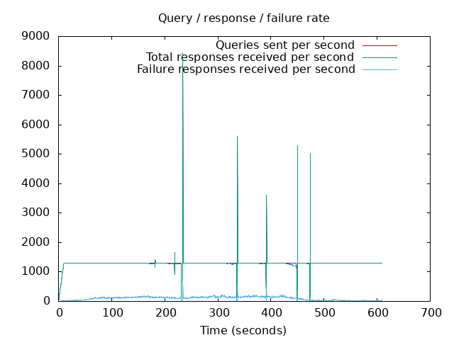
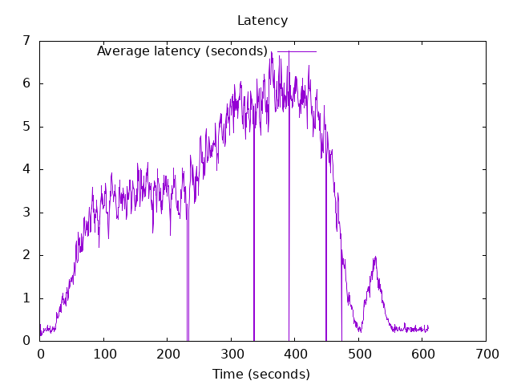

DNS Resolution Performance Testing Tool Version 2.14.0 [Status] Command line: resperf -P 20250620-0959.gnuplot -M doh -s 79.127.218.224 -O doh-uri=https://protective.joindns4.eu/dns-query -d domains_shuffled.list -C 50 -m 1300 -b 1400 -q 1000000 -R -r 10 -c 600 -t 30 -F 0 [Status] Sending [Status] Ramp-up done, sending constant traffic Warning: received a response with an unexpected id: 1658 Warning: received a response with an unexpected id: 2013 Warning: received a response with an unexpected id: 2778 Warning: received a response with an unexpected id: 3493 Warning: received a response with an unexpected id: 3664 Warning: received a response with an unexpected id: 3660 Warning: received a response with an unexpected id: 3677 Warning: received a response with an unexpected id: 3846 Warning: received a response with an unexpected id: 4087 Warning: received a response with an unexpected id: 4084 Warning: received a response with an unexpected id: 4080 Warning: received a response with an unexpected id: 4073 Warning: received a response with an unexpected id: 4093 Warning: received a response with an unexpected id: 4390 Warning: received a response with an unexpected id: 4540 Warning: received a response with an unexpected id: 4663 Warning: received a response with an unexpected id: 4660 Warning: received a response with an unexpected id: 4768 Warning: received a response with an unexpected id: 4771 Warning: received a response with an unexpected id: 4774 Warning: received a response with an unexpected id: 4770 Warning: received a response with an unexpected id: 4776 Warning: received a response with an unexpected id: 4791 Warning: received a response with an unexpected id: 4799 Warning: received a response with an unexpected id: 5261 Warning: received a response with an unexpected id: 5745 Warning: received a response with an unexpected id: 6290 Warning: received a response with an unexpected id: 10142 [Status] Waiting for more responses [Status] Testing complete Statistics: Queries sent: 786499 Queries completed: 783721 Queries lost: 2778 Response codes: NOERROR 491774 (62.75%), SERVFAIL 62417 (7.96%), NXDOMAIN 229530 (29.29%) Run time (s): 622.435459 Maximum throughput: 8452.000000 qps Lost at that point: 0.00% Connection attempts: 74 (74 successful, 100.00%) DNS-over-HTTPS statistics: HTTP/2 return codes: 200: 783749
 